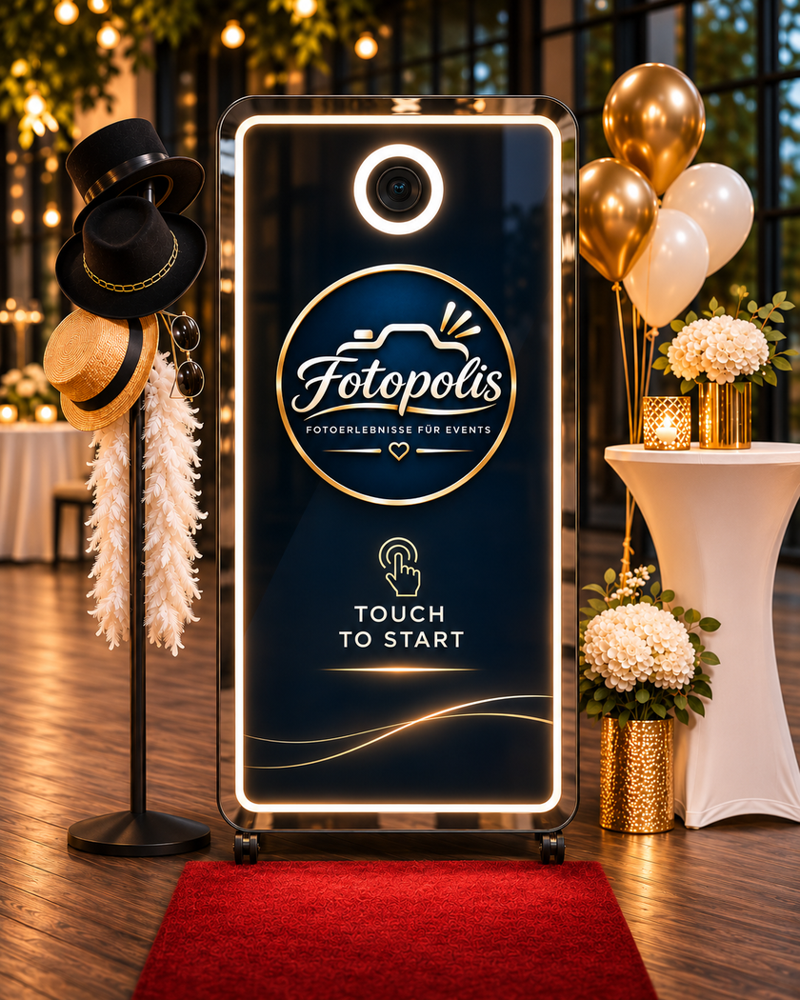

FOTOPOLIS · PREMIUM FOTOERLEBNISSE
Momente, die bleiben.
Fotobox, Foto Mirror und Fotowohnwagen – drei besondere Fotoerlebnisse für dein Event.
DIE FOTOPOLIS ERLEBNISWELTEN
Drei Charaktere. Ein Gefühl.
Jedes anders. Alle dafür gemacht, Erinnerungen unvergesslich zu machen.
DEIN EVENT · DEIN MOMENT
Jetzt Event anfragen
Bereit für besondere Erinnerungen?
Erzähl uns von deinem Event. Wir beraten dich persönlich.